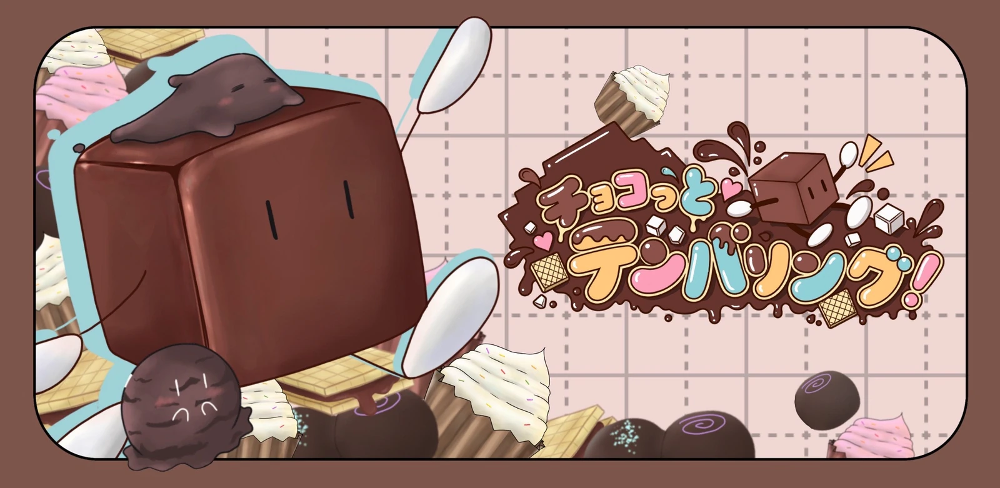
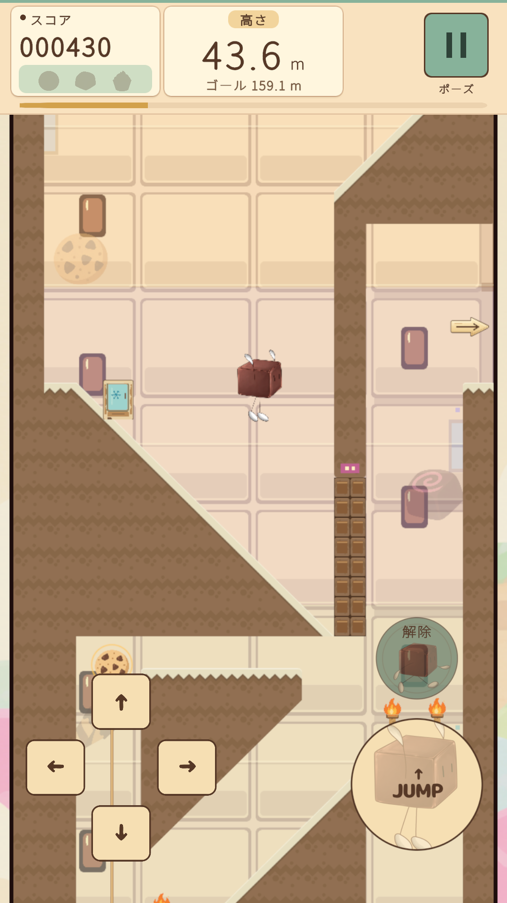
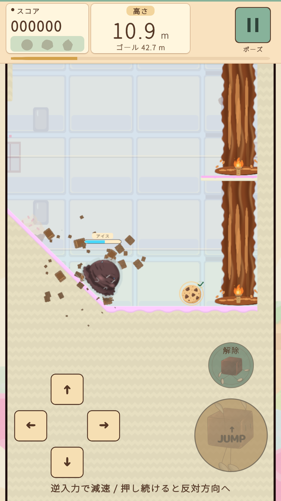
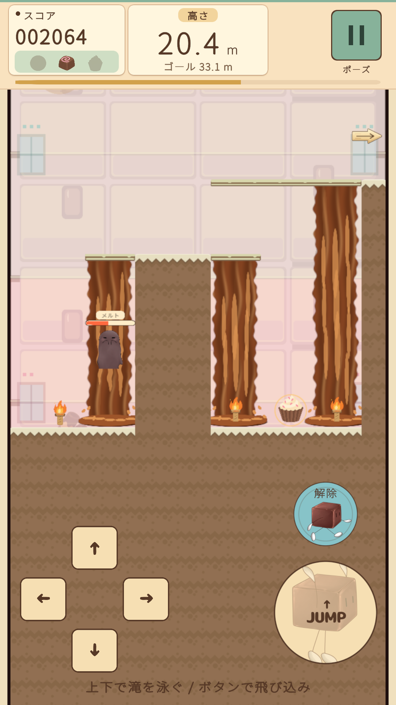
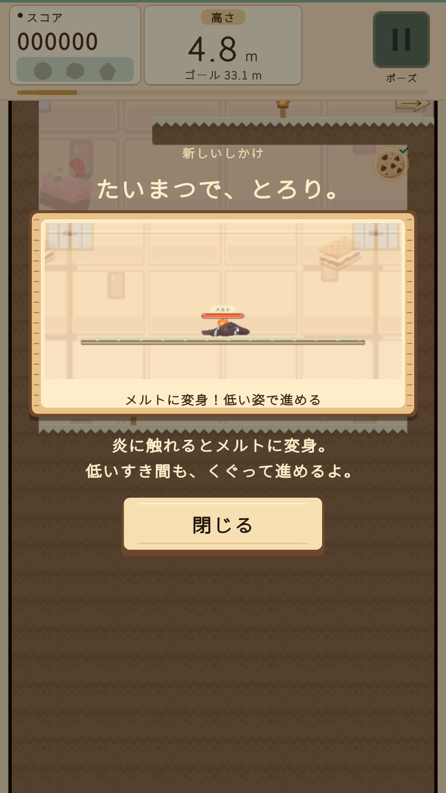
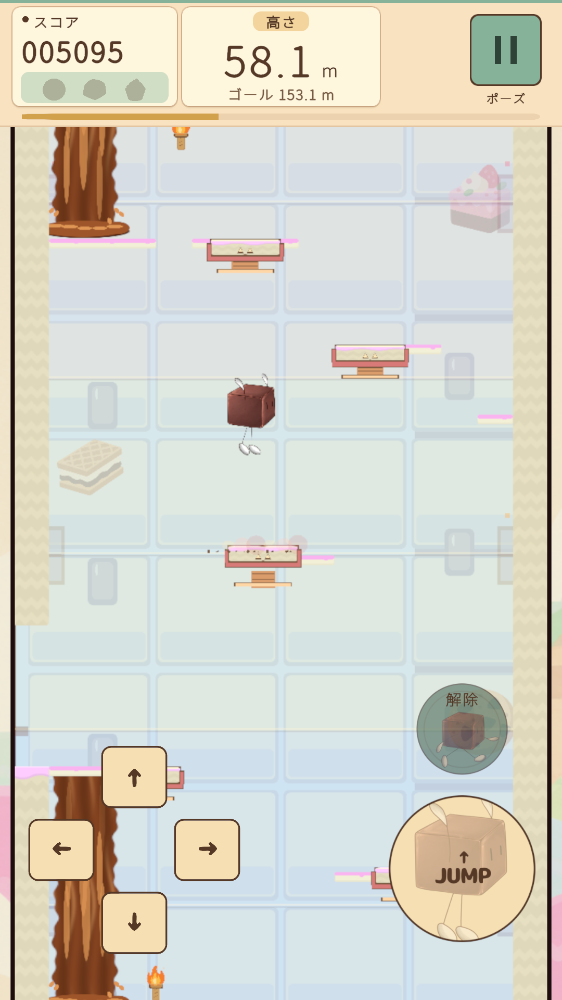
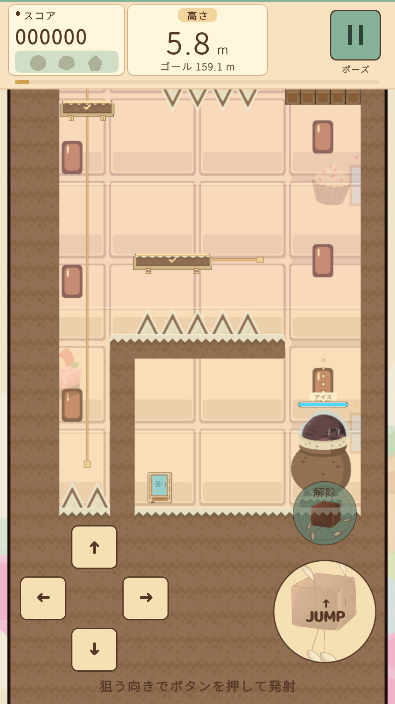
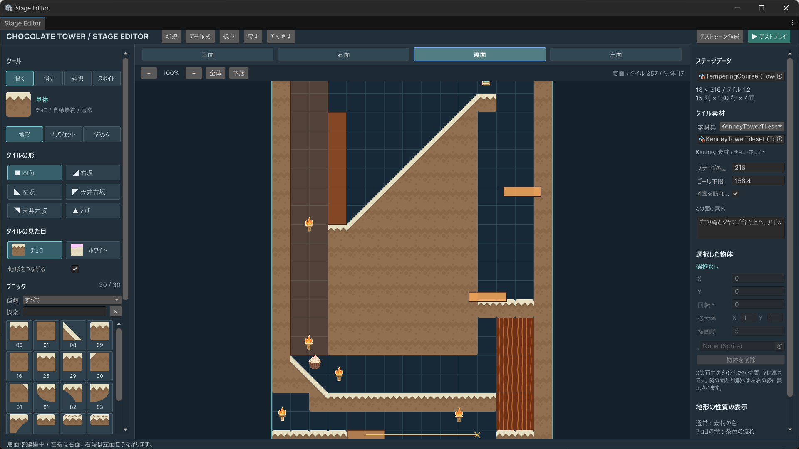
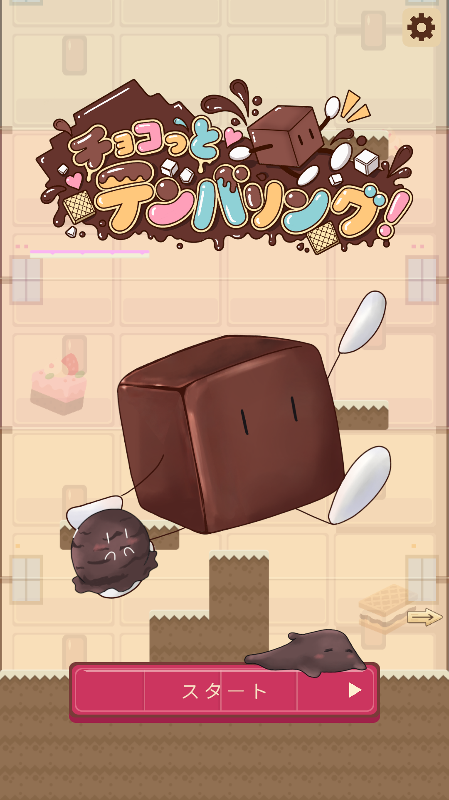
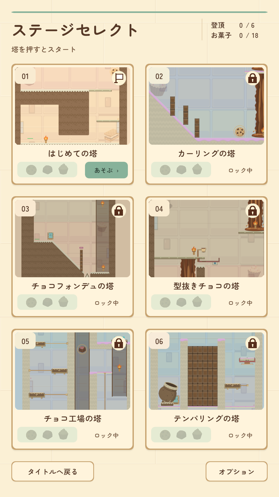

Unity / C#
チョコっとテンパリング！

溶けて、冷やして、チョコっとひらめく！
チョコレートの主人公が3つの姿を使い分け、タワーの頂上を目指すパズルアクションゲームです。温める場所や冷やすタイミングを考え、四面を回り込みながら進むルートを探します。
- ジャンル
- パズルアクション
- 開発環境
- Unity 6 / C#
- 主な技術
- Rigidbody2D・Collider2D / RenderTexture / UI Toolkit
Promotion Video
PV
3つの姿と、お菓子の仕掛け
通常のチョコで跳び、アイスで滑り、メルトで低い通路やチョコの滝を進みます。実際のゲーム画面を、説明字幕とともにまとめたPVです。
各地のお菓子を集めるとスコアが加算されます。頂上への到達に加えて、収集と高得点にも挑戦できます。
再生ボタンから開始できます。縦長の映像は全画面表示でもご覧いただけます。
動画ファイルを開くThree Forms
3つの姿を使い分ける
姿が変わるのは一定時間だけ。仕掛けに合わせて、温める場所や冷やすタイミングを考えながら進みます。
通常のチョコ
ジャンプで足場を渡れます。

冷却したアイス
硬いアイスになり、坂を滑って加速します。勢いをつけて、チョコの壁を壊して進みます。

加熱したメルト
溶けて背が低くなった姿で通路を抜け、チョコの滝を登り降りできます。

画像を選ぶと拡大できます。
Tower and Gimmicks
塔を巡る仕掛け
ひとつの面で行き詰まったら、別の面へ回り込みます。動く足場、トゲ、チョコの滝、ジャンプ台、大砲を組み合わせたルートを観察し、タイミングを合わせて突破します。



Implementation
2D物理と立体的な表示を分ける
移動と当たり判定は、横並びに配置した四面の2D空間で処理します。各面をカメラで撮影し、その映像を3Dの塔へ投影。表示用の塔だけを回転させることで、2D物理を維持したまま、塔を回り込む見せ方を作っています。
- 2Dの四面移動・接触・仕掛けを処理
- 面ごとの撮影RenderTextureへ描画
- 3Dの塔へ表示見せる塔を回転
面を切り替えるときの動き
塔の角へ進むと、表示用の塔が回転し、隣の面へ切り替わります。短い実プレイ動画で、立体的な表示と面のつながりをご覧いただけます。
再生・一時停止は動画の操作ボタンで行えます。自動では再生しません。
面移動の動画ファイルを開く能力の持続時間と物理形状を分離
状態と残り時間を管理する処理と、移動・コライダーを管理する処理を分けています。低い通路で能力が切れた場合は、低い当たり判定を維持して3秒間の脱出猶予を設けています。立てる空間に出ると通常の大きさに戻り、時間内に脱出できなければ圧死します。
移動床での判定のずれを修正
上昇する床の上で、変身解除ボタンが点滅する問題がありました。立ち上がり判定を描画用の補間位置からRigidbody2Dの物理位置へそろえ、床との判定時点を一致させました。
Editor Tool
四面を編集するステージツール
UnityのUI Toolkitで、地形と仕掛けの配置からテストプレイまでをつなぐステージ編集ツールを制作しました。正面・右面・裏面・左面を切り替え、同じステージデータを編集と実行に使用します。
- 地形パレットからタイルを選び、描画・消去・スポイトで編集。
- 仕掛けや配置物の位置・寸法・設定を調整。
- 保存、Undo・Redo、実行シーンの作成、テストプレイに対応。

画像を選ぶと拡大できます。細部は原寸画像でご確認ください。
エディタの原寸画像を開くMenu Screens
タイトルとステージ選択
タイトル・6つの塔の選択画面を見る 2枚

